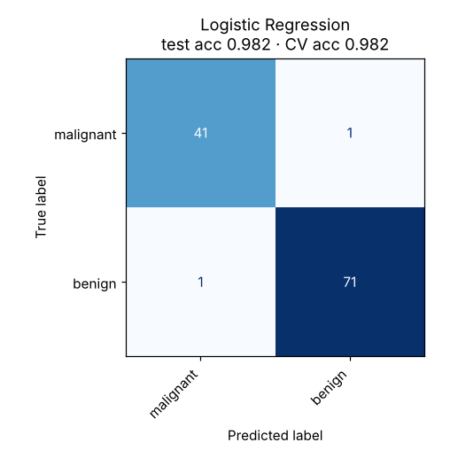

Logistic Regression
A straight boundary between classes, with distance from that boundary turned into a probability.
Try it
Experiment: Choose Circles: a straight line fails. Tick curved features and the same algorithm draws a ring.
The idea
Despite the name, this is a classifier. It computes the same weighted sum as linear regression, z = w·x + b, then squashes it through the S-shaped sigmoid so the output lands between 0 and 1. That number is the probability of the positive class.
Points far on one side of the boundary get probabilities near 0 or 1; points near the boundary get about 0.5. In the demo the shading is stronger where the model is more confident.
How it works, step by step
- Compute a score
z = w·x + bfor each example. - Turn it into a probability with the sigmoid
p = 1 / (1 + e−z)(softmax when there are more than two classes). - Measure how wrong the probabilities are with log-loss, which punishes confident mistakes heavily.
- Adjust the weights by gradient descent. Regularisation keeps them small so the model does not overreact to noise.
Log-loss = −(1/n) Σ [ y log p + (1 − y) log(1 − p) ]The decision boundary is where p = 0.5, i.e. where w·x + b = 0: a straight line.
Strengths and weaknesses
Strengths
- Outputs probabilities, not just labels
- Fast, and each weight shows how a feature pushes the odds
- Regularisation (C in scikit-learn) controls overfitting
- Strong baseline for any binary problem
Weaknesses
- The boundary is straight unless you engineer extra features
- Needs feature scaling for good optimisation
- Struggles when the classes interleave (try Circles)
Use it when: Binary decisions where you want probabilities and explanations: churn, credit risk, diagnosis.
Avoid it when: The classes are separated by curved or tangled regions and you cannot design features for them.
In this repository
Dataset: Breast Cancer Wisconsin (569 rows, 30 features)

from sklearn.linear_model import LogisticRegression
from sklearn.pipeline import make_pipeline
from sklearn.preprocessing import StandardScaler
model = make_pipeline(StandardScaler(), LogisticRegression(C=0.1))
model.fit(X_train, y_train)
model.predict_proba(X_test)[:, 1] # probability of the positive classFull code: models/02_logistic_regression. Train it on your own data with
python models/02_logistic_regression/train.py --data your.csv --target column.
Check yourself
The boundary is where w·x + b = 0, which is linear in the features.
σ(z) maps (−∞, ∞) to (0, 1).
With x² + y² as features, a circle becomes a straight line in the new feature space.
Answer all three correctly to mark this model as learned.